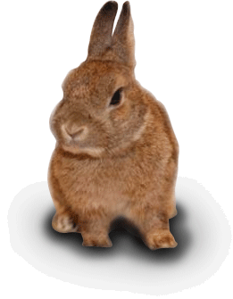
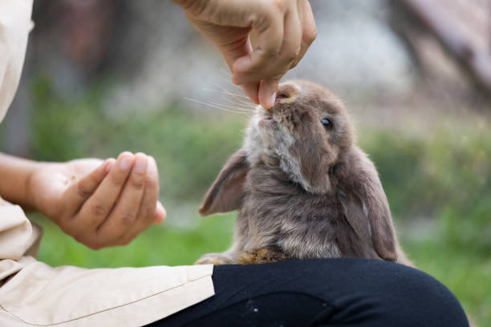
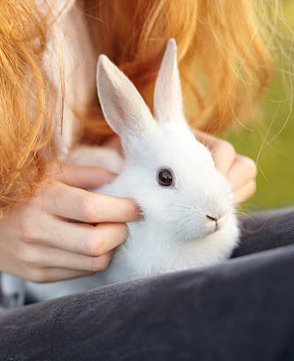
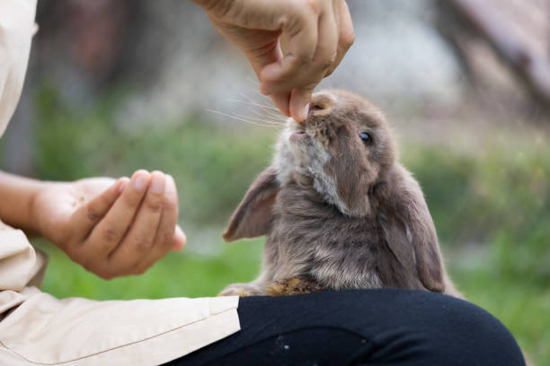

Considerations


Before you decide to adopt, please consider the following:
- The life expectancy of rabbits is between 8 to 12 years; you must be prepared for this level of commitment.
- It is essential to spend time with your rabbits and interact with them, like talking to and petting them. You need to pay special attention to your rabbit’s physical condition and be aware of any signs of sickness.
- It is important to clean your rabbits' accessories (e.g. cages, water bottles, bedding) regularly and refill their food daily to ensure good health.
- Your rabbit's expenses, for example, the cage, food, hay, medical treatment should be budgeted for before you adopt.
- Rabbits need to exercise to stay healthy; they need to exercise out of the cages for around 4 hours a day.
- Rabbits like biting. Please remove harmful objects before setting the rabbit free, otherwise they may bite electric wires, plants and other harmful substances and swallow them.
- If your rabbit is sick, it should be treated by experienced rabbit friendly veterinarians only.
- If you have other pets, please ensure there will be no fighting and that they can live harmoniously.
- Rabbits reproduce easily, if you have a couple of rabbits please ensure that the rabbits are either separated or sterilized.
- If you live with other people, obtain their approval and make sure that they are not allergic to animals.
 Advice on Adoption
Advice on Adoption
-

- Applicants must be above the age of 18. Adoption applications are only valid for HKSAR permanent residents living in Hong Kong. Any applications from organizations or groups will not be accepted.
- Before the application is approved, a home visit may be conducted.
- Applicants are required to provide their identity cards and also the true copy of proof of residence dated within the last three months after application approval. Applicants must also register for HKRS membership and fill out adoption agreement to finalize the adoption procedure.
- We reserve the right to reject applications. Terms are subject to change without further notice.
- Our staff carries out regular body checks on rabbits, if a rabbit is showing any symptoms they will be transferred to an experienced vet for treatment immediately. When applicants confirm their choice of rabbit, our staff will explain the rabbit’s condition. Applicants should understand that we may not be able to closely monitor the health of each rabbit in our centre. Therefore we are unable to guarantee the health of each rabbit particularly when obvious symptoms have not been previously found.
- Adopters need to understand that any medical expenses incurred after successful adoptions should be covered by the adopters themselves.
- All potential adopters must agree to the sterilization of the rabbit before the adoption procedure. The rabbit also needs to fully recover before the rabbit can be adopted.
- Some rabbits may have some behavioural problems when they first arrive their new homes, this may be caused by the stress of changing their living environment. We welcome any enquiries from adopters on a particular rabbit’s health, behaviour or any other issues. We are always happy to offer advice and assistance to rabbit lovers.
Application and Procedure

- Since the visiting hours for general visitors are now suspended, only successful applicants, who passed our assessment, can have chance to meet their chosen rabbit (adoption procedure 2-7 remains unchanged). All general visitors, who want to apply adoption, can only choose rabbit from our official website for rabbit adoption application.
- All applicants must have 'HONG KONG PERMANENT IDENTITY CARD', over 18 years old, with all family members’ agreement. Also, applicant or his/her spouse must have full-time job with stable salary currently.
- There is no online application for our adoption. Please come to our centre to complete the application form on the spot. Thank you.
- Step 1
- (Suspended) Come to our centre to visit the homing rabbits during visiting hours.
- Step 2
- Choose the rabbits and fill in the application form for adoption on the spot by applicant himself / herself.
- Step 3
- Wait for volunteer-in-charge to contact you for assessment or give you the assessment result within 10 working days generally (Excluding Saturday, Sunday and Public Holiday). (If the number of adoption application forms received is so much higher than the workload of the volunteers-in-charge, it may take more than 10 working days)
- Step 4
- Suitable applicant will be arranged to come to our centre to do at least 2 times cage cleaning works (about 1-3 hours each time, depending on the situation).
- Step 5
- Prepare all the things for your rabbit. (Following the checklist your volunteer-in-charge give you) and get approval from your volunteer-in-charge.
- Step 6
- Revision about rabbit care knowledge on our official website.
- Step 7
- Attend a 'Proper Rabbit Keeping' training course (about 2-5 hours, depending on the situation) and pass a simple test before bringing rabbit home.
Adoption Fee
Adoption service is free of charge.

 News
News
- (What's New)14 Apr 2023
Bun Bun Cha Fabric Key Holder - (What's New)14 Apr 2023
Bun Bun Cha Fabric Bag Charity Sale - (What's New)11 Apr 2023
Misfortunes Never Come Singly During This Easter - (What's New)05 Apr 2023
Why didn’t HKRS hold any activities this Easter? - (Events)04 Apr 2023
Talsss flower 兔兔花義賣活動 - (Events)01 Apr 2023
J.NC Workshop 2023年3月份寵物快閃拍攝 - (What's New)29 Mar 2023
天氣不穩定 兔協28隻兔仔集體患病 醫療費達6位數緊急籌款
Adoption
-

Rabbit Name: Michi
Breed: Angora
Age: 3.5 years old
Personality: Active & Curious -

Rabbit Name: Chess
Breed: Domestic
Age: 3.5 years old
Personality: Shy & Playful -

Rabbit Name: Luka
Breed: Mixed Dwarf
Age: 6 years old
Personality: Active & Curious -

Rabbit Name: Matic
Breed: Lionhead
Age: 6 years old
Personality: Shy & Playful
Copyright 2010-2023 © Hong Kong Rabbit Society. All Right Reserved.